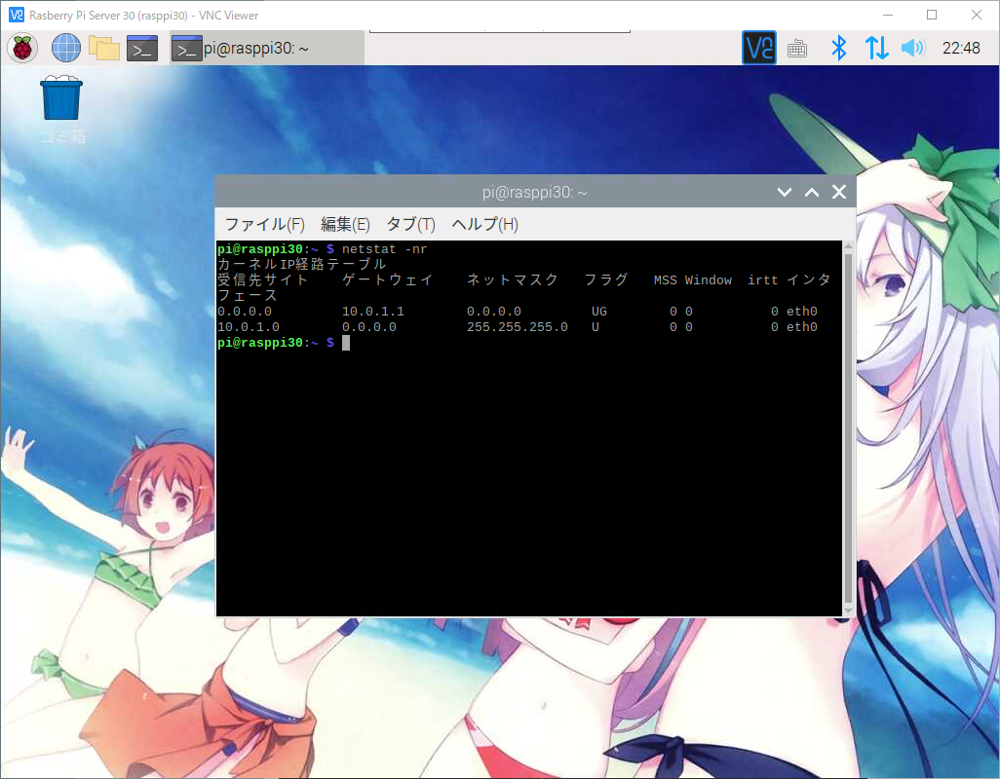
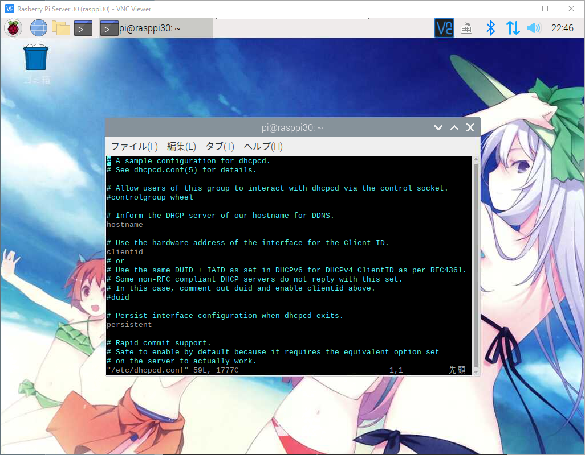
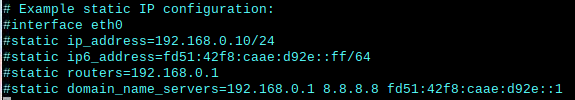
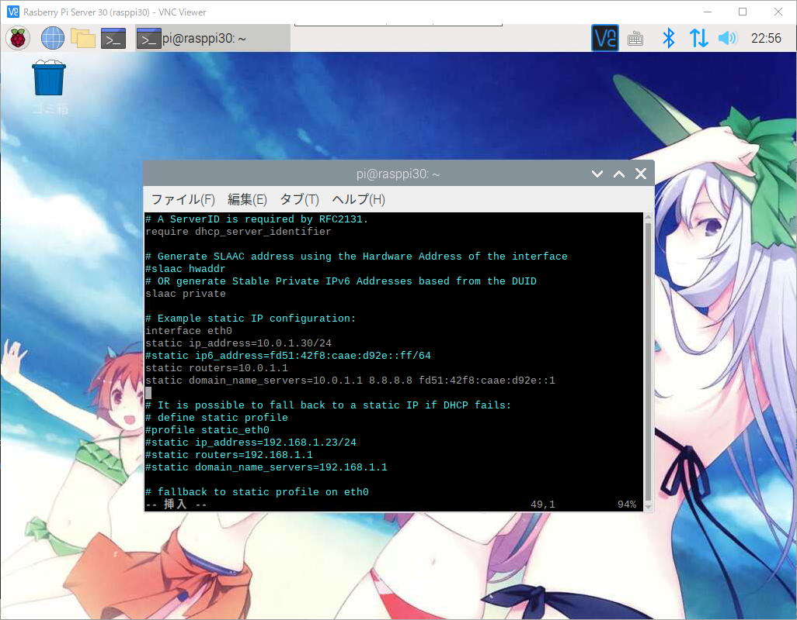
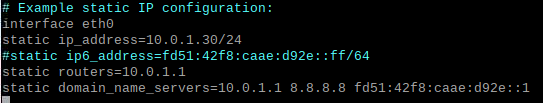
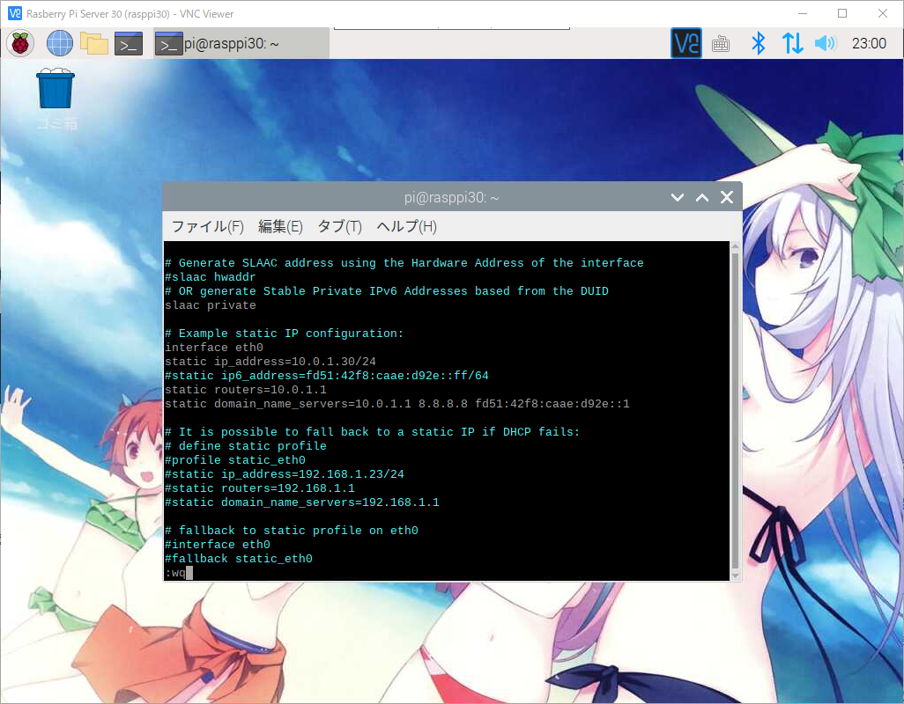
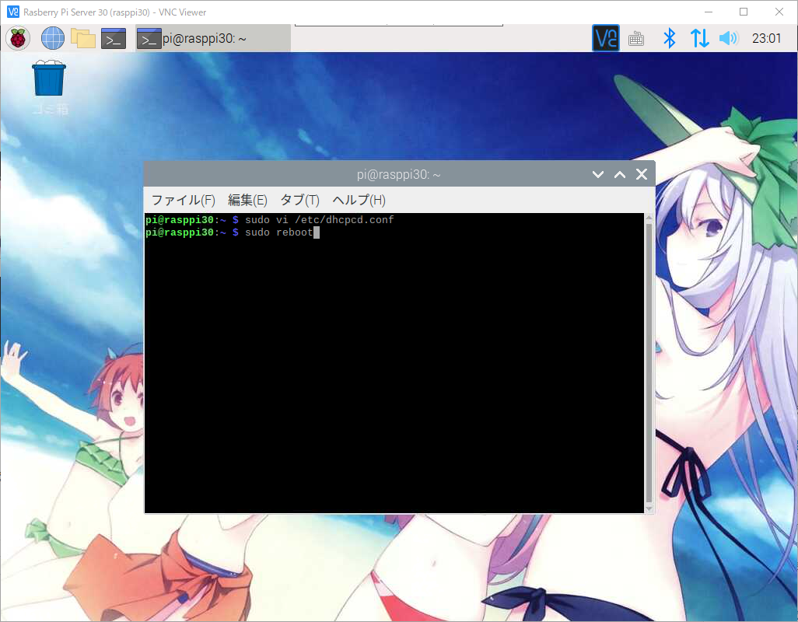

라즈베리파이 고정 IP Address 설정
라즈베리파이 고정 IP Address 설정
라즈베리파이 제로를 사용하시는 분들같이 랜카드가 없으신 경우에는 저렴하게
USB용 이더넷 어뎁터를 구매하신후 이용할실수 있습니다.
VNC로 라즈베리파이 서버로 접속하고 콘솔창을 여시기 바랍니다.
공유기의 게이트 정보를 얻기위해서 아래의 명령어를 입력해 주세요.
1 | $ netstat -nr |

1 | $ sudo vi /etc/dhcpcd.conf |
아래와 같이 나오시면


위의 부분이 나올때까지 커서를 내려주시기 바랍니다.
1 | # Example static IP configuration; |


위와같이 4줄에 대해서 #(주석)을 해제하시고
1 | # Example static IP configuration; |
static ip_address 부분에 고정하실 아이피로 수정해 주시기 바랍니다.
static routers 부분에는 공유기 게이트 정보를 입력해 주시기 바랍니다.
static domain_name_servers 부분의 첫번째 아이피도 공유기의 게이트 정보를 입력해 주시기 바랍니다.
저장후 빠져나옵니다.

설정 정보를 반영하기위해서 재가동이 필요합니다.
아래의 명령어를 입력해 주시기 바랍니다.
1 | $ sudo reboot |

재기동이 끝난후 새로 바꾼 아이피로 접속을 하시기 바랍니다.
콘솔창에 아래의 명령어를 입력해 주시기 바랍니다.
1 | $ ifconfig |
아이피 정보가 고정된 정보로 바뀐것을 확인 하실수 있습니다.